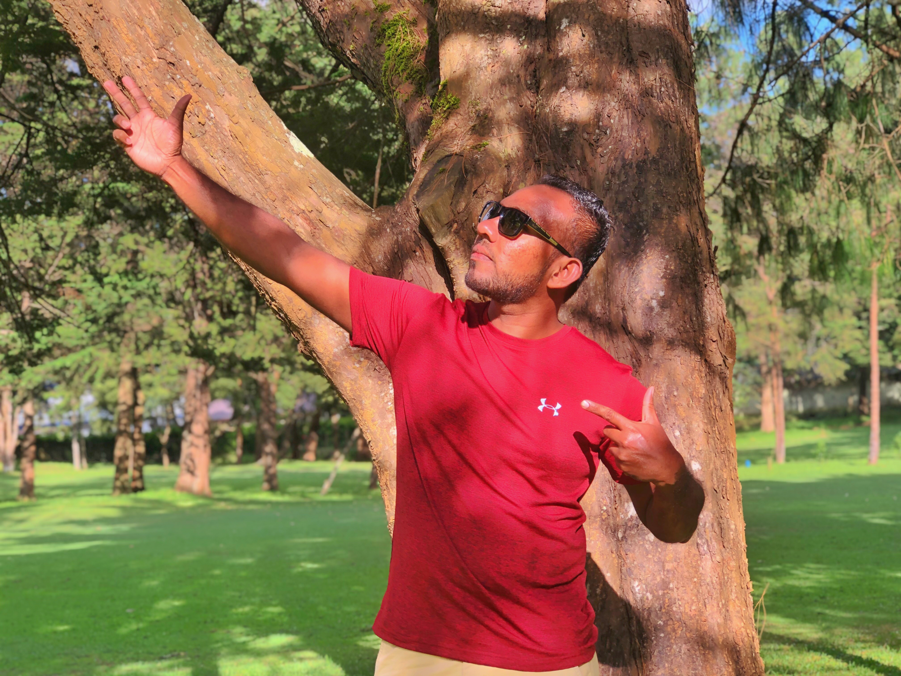

Kushan Nipuna

Summary
I am a hardworking and Library service and administration.
Education
- Higer Diploma in Library and Information Science (2019-2022)
Wrok experience
-
Computer Application Assistant
June 2010 - May 2014
- Maintained Customer records and Information
- prepared University Students Transcript
- Students Registration Programme
-
Library Information Assistant
June 2014 - Present
- Issued Books for Students
- Pastquestion papers collection
- Prepared reports and Presentatios
Skills
- Students service
- Microsoft Office Suite
- Leadership skills
Awards and Certifications
- Best Counter Service (2018)
Other